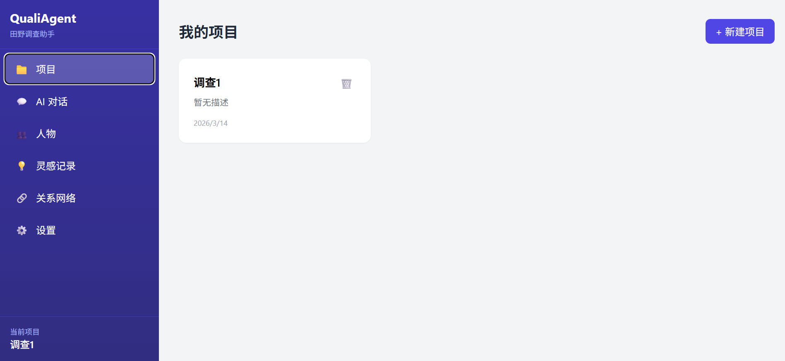
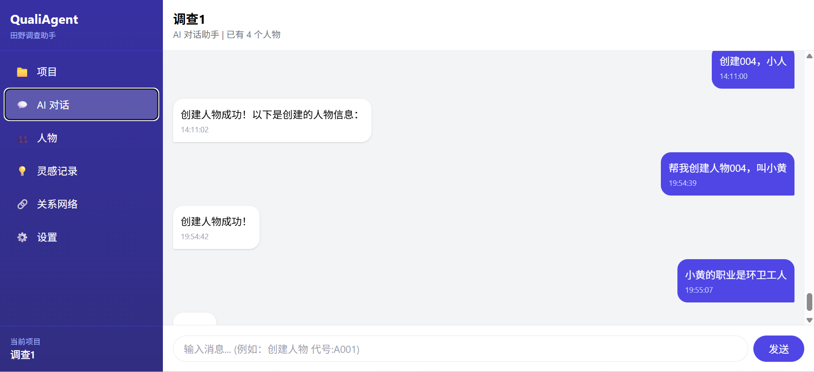
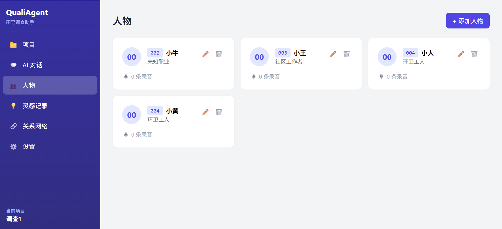
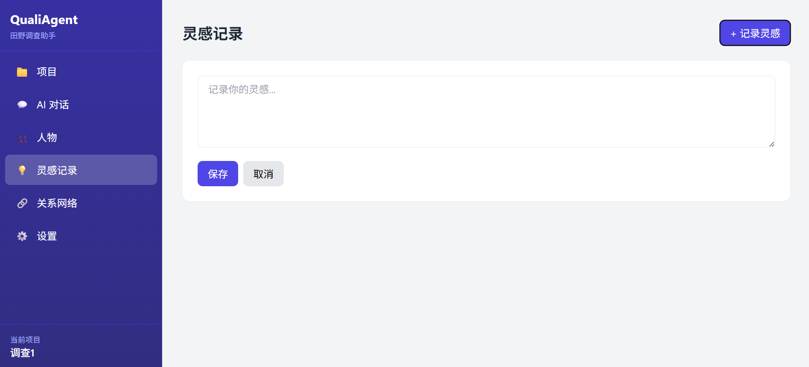
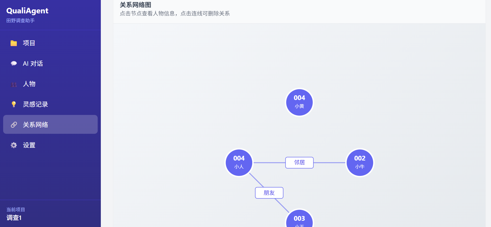
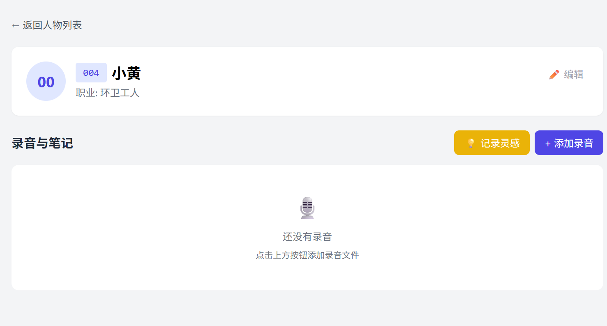

智能田野调查助手 · 让研究更简单
🚀 立即体验 DemoQualiAgent 是一款专为社科研究生、人类学/社会学学生设计的田野调查辅助工具。 通过AI对话交互，让创建人物档案、记录灵感、管理访谈进度变得简单自然。
告别散落在Excel、Word、NVivo中的资料，用一个工具串联整个研究流程。 所有数据本地存储，保护您的田野资料隐私安全。
像跟研究助理聊天一样，说一句话就能创建人物、记录灵感、标记访谈状态
导入录音自动转文字，边听边记笔记，文字高亮同步播放位置
自动记录访谈次数、状态，支持标签分类和待追问问题列表
所有笔记集中显示，支持按人物、颜色、时间筛选，一键跳回录音位置
可视化人物关系，通过对话添加关系，鼠标悬停查看关系类型
自动列出需再次访谈的人物，AI主动提醒今日访谈计划
打开软件 → 点击"新建项目" → 输入项目名称（如"某村养老研究"）
在聊天框输入："今天访谈了王大爷，65岁，木匠" → AI自动创建人物档案
点击"录音列表" → "导入" → 选择录音文件（mp3/m4a/wav）→ 等待转写完成
打开录音 → 选中文字 → 右侧直接记笔记 → 自动保存并关联人物
左侧菜单查看"灵感列表"和"人物档案"，点击可跳转回录音位置
在聊天框说："王大爷和李婶是邻居" → 打开"关系网络"查看可视化图表






详细定义产品定位、目标用户、核心功能、技术方案和开发顺序，v0.1版本完整规划
针对3-5人的可用性测试方案，包含任务清单、观察重点和简易问卷模板
5名社科研究生实测结果：87%任务完成率，听取标记功能被评为最有价值功能
基于测评反馈的三大优化方向：项目二级人物列表、侧边直接笔记、转录文本歌词化
"创建人物，李阿姨，55岁，务农"
"今天看到妇女们一起做手工，也是一种互助"
"王大爷下周还要再聊一次"
"王大爷和李叔是朋友"
"下周要访谈谁？"
"把王大爷的职业改成退休教师"
所有数据存储在本地，不会上传，保护您的田野资料隐私安全
🚀 立即体验 Demo